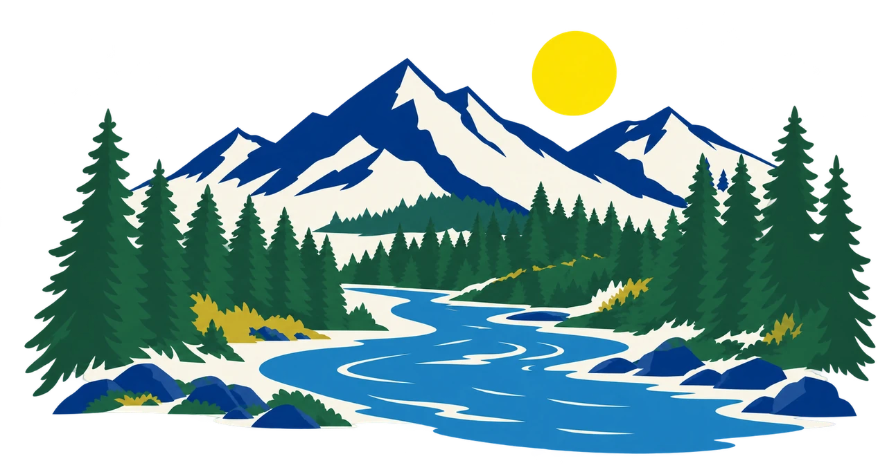

Oregon · 28 reaches · refreshed every morning

Search, the water directory, fish counts and stocking lists need JavaScript. The classic site has the same records, and the raw data is in waters.json.